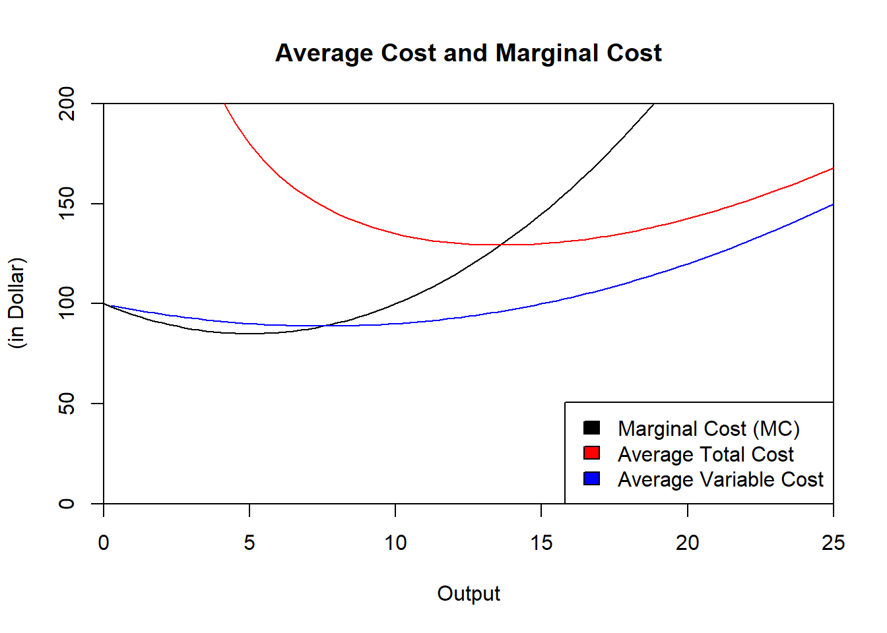

5.6 Exercises
Cost Function Components: A firm’s total cost function is given by the equation \(TC = 4000 + 5 \cdot q + 10 \cdot q^2\). Write an expression for each of the following cost concepts: (1) Total Fixed Cost, (2) Average Fixed Cost, (3) Total Variable Cost, (4) Average Variable Cost, and (5) Average Total Cost.
Cost Function and Profit: Consider the figure below and assume that the current price is at 150. In the graph, show the profit maximizing quantity produced and present the profit in the graph.

Production and Cost Function Relationship: This question will make you show the connection between the production function and the cost function. It will also visualize the marginal and average product of labor. The homework must be done in Excel. Be sure to use the functions available in Excel to make your life easy. Especially the use of “$” to keep referencing a particular cell. Except for the input of labor and/or capital columns, every other column should be based on a function starting with “=”. For your Excel file, make sure that the sheets, tables, and graphs look neat and presentable. The polynomial production function first rises at an increasing rate and then increases at a decreasing rate. That is, the marginal product of labor is first increasing due to specialization and then decreasing. The function you will be looking at is written as: \[Q = a \cdot L + b \cdot L^2 +c \cdot L^3\] where Q represents the output quantity and L represents the labor input. The parameters of the function are a, b, and c. In our case, we will define \(a=10\), \(b=20\), and \(c=-0.6\). Open an empty Excel spreadsheet and name the sheet Poly Function.
- Write “a=” in cell A1, “b=” in cell A2, and “c=” in cell A3.
- Put the values of 10, 20, and -0.6 in cells B1, B2, and B3, respectively.
- Assume that the wage \(w\) is 10 per unit of L and that the fixed costs are 100. Put “w=” and “FC=” in cells C1 and C2, respectively. Put 10 and 100 in cells D1 and D2, respectively.
Put the following labels in cells A4 through G4: \(L\), \(Q\), \(MPL\), \(APL\), \(FC\), \(VC\), and \(TC\). Those columns represent the units of labor, the output quantity, the marginal product of labor, the average product of labor, the fixed costs, the variable cost, and the total cost.
- Put 0 in cells A5, 0.25 in cell A6,… until you reach 20 in cell A85 (Once you have the first two values, simply mark both and drag them down until cell A85.). Now, you have all the information you need to fill out the columns for \(Q\), \(MPL\), \(APL\), \(FC\), \(VC\), and \(TC\).
- In three new sheets, I want you to graph your results. Graph the production function in the first sheet. Graph the average product and marginal product of labor in the second sheet. And lastly, draw the cost function in the last sheet. Be careful with the cost function, it should not be a linear line! Use the scatter plot function of Excel.
Cobb-Douglas Production Function: A Cobb-Douglas production function is used very often in economics because its functional form is very flexible. In general it is written as follows: \[Q = A \cdot K^\alpha \cdot L^\beta\] Create a new sheet called Cobb Douglas and type in the following information regarding parameters:
- A1 to A4: K Fixed, alpha, beta, A.
- B1 to B4: 9, 0.5 0.3, 10
- C1 to C2: w, r
- D1 to D2: 0.5, 0.2
In cells A5 through H5, put the following labels: Q, Kfixed, L, Q, MPL, APL, FC, VC, and TC.
- Ranging from 0 to 10 in increments of 0.1, put the units of labor in cells C6 through C106. Then fill in the remaining columns.
- In three new sheets, I want you to graph your results. Graph the production function in the first sheet. Graph the average product and marginal product of labor in the second sheet. And lastly, draw the cost function in the last sheet. Be careful with the cost function, it should not be a linear line! Make sure you use the scatter plot function of Excel.
Multi-Plant Production: In class, we have considered producing with one production facility only. Our analysis and results (e.g., price equals marginal cost) is easily extendable to multiple production facilities. Assume that you are a producer who has two production plants. You incur no fixed cost for running both plants and only face variable costs. The total cost for the plant 1 (\(TC_1\)) and 2 (\(TC_2\)) are \(TC_1(Q_1) = 2 \cdot Q_1^3\) and \(TC_2(Q_2) = Q_2^2\). The marginal cost is written as \(MC_1 = 6 \cdot Q_1^2\) and \(MC_2 = 2 \cdot Q_2\). In Excel, write Q in cell A1 and write \(0,0.1,\dots,5\) in cells A2 to A52 (do not enter those numbers manually but make sure to just drag the little square down). Name cells B1 through E1 as TC1, TC2, MC1, MC2. Use the provided functions to fill out cells B2 through E52. Next, graph the two total cost functions in the same chart and name the sheet TC. Do the same for the marginal cost functions. Based on the functions and charts provided, what is your total production if the price is $6? Do you produce in one plant or both plants? Provide an intuitive explanation for your answer? What is your revenue? What is your total cost?
Supply Function Derivation: This problem recreates the derivation of the supply function using Excel. It is a good opportunity to strengthen the understanding of the concepts associated with total cost, average total cost, average variable cost, and marginal cost. The total cost is given by the following equation: \[450+100 \cdot Q-3 \cdot Q^2+0.2 \cdot Q^3\]
- Pick an empty Excel sheet and type Price in cell A1. For now, put the number 160 in cell B1. Name the cells A2 to H2 as follows: q, Cost, Marginal Cost (MC), Average Total Cost (ATC), Average Variable Cost (AVC), Revenue, Profit, Price. Fill in the production quantities in cells A3 to A28 ranging from 0 to 25 in increments of 1.
- Fill in the marginal cost, average total cost, average variable cost, revenue, profit, and price columns. Make the make the revenue, profit, and price columns a function of cell B1.
- Once you have filled out the table, I want you to create three new sheets: (1) Sheet Profit: A graph that displays the profit as a function of the quantity produced, (2) Sheet Cost and Revenue: A graph that displays cost and revenue as a function of quantity, and (3) Sheet MC and AC: A graph that displays MC, ATC, AVC, and price.
Once you have done this, you can play around with the price by changing cell B1, i.e., the price, and see how profit and output decisions change.